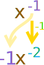

Derivative Rules
The Derivative tells us the slope of a function at any point.

There are rules we can follow to find many derivatives.
For example:
- The slope of a constant value (like 3) is always 0
- The slope of a line like 2x is 2, or 3x is 3 etc
- and so on.
Here are useful rules to help you work out the derivatives of many functions (with examples below). Note: the little mark ’ means derivative of, and f and g are functions.
| Common Functions | Function |
Derivative |
|---|---|---|
| Constant | c | 0 |
| Line | x | 1 |
| ax | a | |
| Square | x2 | 2x |
| Square Root | √x | (½)x-½ |
| Exponential | ex | ex |
| ax | ln(a) ax | |
| Logarithms | ln(x) | 1/x |
| loga(x) | 1 / (x ln(a)) | |
| Trigonometry (x is in radians) | sin(x) | cos(x) |
| cos(x) | −sin(x) | |
| tan(x) | sec2(x) | |
| Inverse Trigonometry | sin-1(x) | 1/√(1−x2) |
| cos-1(x) | −1/√(1−x2) | |
| tan-1(x) | 1/(1+x2) | |
| Rules | Function |
Derivative |
| Multiplication by constant | cf | cf’ |
| Power Rule | xn | nxn−1 |
| Sum Rule | f + g | f’ + g’ |
| Difference Rule | f - g | f’ − g’ |
| Product Rule | fg | f g’ + f’ g |
| Quotient Rule | f/g | f’ g − g’ fg2 |
| Reciprocal Rule | 1/f | −f’/f2 |
| Chain Rule (as "Composition of Functions") |
f º g | (f’ º g) × g’ |
| Chain Rule (using ’ ) | f(g(x)) | f’(g(x))g’(x) |
| Chain Rule (using d dx ) | dy dx = dy du du dx | |
"The derivative of" is also written d dx
So d dx sin(x) and sin(x)’ both mean "The derivative of sin(x)"
Examples
Example: what is the derivative of sin(x) ?
From the table above it is listed as being cos(x)
It can be written as:
ddxsin(x) = cos(x)
Or:
sin(x)’ = cos(x)
Power Rule
Example: What is ddxx3 ?
The question is asking "what is the derivative of x3 ?"
We can use the Power Rule, where n=3:
ddxxn = nxn−1
ddxx3 = 3x3−1 = 3x2
(In other words the derivative of x3 is 3x2)
So it is simply this:

"multiply by power
then reduce power by 1"
It can also be used in cases like this:
Example: What is ddx(1/x) ?
1/x is also x-1
We can use the Power Rule, where n = −1:
ddxxn = nxn−1
ddxx-1 = −1x-1−1
= −x-2
= −1x2
So we just did this:

which simplifies to −1/x2
Multiplication by constant
Example: What is ddx5x3 ?
the derivative of cf = cf’
the derivative of 5f = 5f’
We know (from the Power Rule):
ddxx3 = 3x3−1 = 3x2
So:
ddx5x3 = 5ddxx3 = 5 × 3x2 = 15x2
Sum Rule
Example: What is the derivative of x2+x3 ?
The Sum Rule says:
the derivative of f + g = f’ + g’
So we can work out each derivative separately and then add them.
Using the Power Rule:
- ddxx2 = 2x
- ddxx3 = 3x2
And so:
the derivative of x2 + x3 = 2x + 3x2
Difference Rule
What we differentiate with respect to doesn't have to be x, it could be anything. In this case v:
Example: What is ddv(v3−v4) ?
The Difference Rule says
the derivative of f − g = f’ − g’
So we can work out each derivative separately and then subtract them.
Using the Power Rule:
- ddvv3 = 3v2
- ddvv4 = 4v3
And so:
the derivative of v3 − v4 = 3v2 − 4v3
Sum, Difference, Constant Multiplication And Power Rules
Example: What is ddz(5z2 + z3 − 7z4) ?
Using the Power Rule:
- ddzz2 = 2z
- ddzz3 = 3z2
- ddzz4 = 4z3
And so:
ddz(5z2 + z3 − 7z4) = 5 × 2z + 3z2 − 7 × 4z3
= 10z + 3z2 − 28z3
Product Rule
Example: What is the derivative of cos(x)sin(x) ?
The Product Rule says:
the derivative of fg = f g’ + f’ g
In our case:
- f = cos
- g = sin
We know (from the table above):
- ddxcos(x) = −sin(x)
- ddxsin(x) = cos(x)
So:
the derivative of cos(x)sin(x) = cos(x)cos(x) − sin(x)sin(x)
= cos2(x) − sin2(x)
Quotient Rule
To help you remember:
(fg)’ = gf’ − fg’g2
The derivative of "High over Low" is:
"Low dHigh minus High dLow, over the line and square the Low"
Example: What is the derivative of cos(x)/x ?
In our case:
- f = cos
- g = x
We know (from the table above):
- f' = −sin(x)
- g' = 1
So:
the derivative of cos(x)x = Low dHigh minus High dLowsquare the Low
= x(−sin(x)) − cos(x)(1)x2
= −xsin(x) + cos(x)x2
Reciprocal Rule
Example: What is ddx(1/x) ?
The Reciprocal Rule says:
the derivative of 1f = −f’f2
With f(x)= x, we know that f’(x) = 1
So:
the derivative of 1x = −1x2
Which is the same result we got above using the Power Rule.
Chain Rule
Example: What is d dx sin(x2) ?
sin(x2) is made up of sin() and x2:
- f(g) = sin(g)
- g(x) = x2
The Chain Rule says:
the derivative of f(g(x)) = f'(g(x))g'(x)
The individual derivatives are:
- f'(g) = cos(g)
- g'(x) = 2x
So:
d dx sin(x2) = cos(g(x)) (2x)
= 2x cos(x2)
Another way of writing the Chain Rule is: dy dx = dy du du dx
Let's do the previous example again using that formula:
Example: What is d dx sin(x2) ?
dy dx = dy du du dx
Let u = x2, so y = sin(u):
d dx sin(x2) = d du sin(u) d dx x2
Differentiate each:
d dx sin(x2) = cos(u) (2x)
Substitute back u = x2 and simplify:
d dx sin(x2) = 2x cos(x2)
Same result as before (thank goodness!)
Another couple of examples of the Chain Rule:
Example: What is ddx(1/cos(x)) ?
1/cos(x) is made up of 1/g and cos():
- f(g) = 1/g
- g(x) = cos(x)
The Chain Rule says:
the derivative of f(g(x)) = f’(g(x))g’(x)
The individual derivatives are:
- f'(g) = −1/(g2)
- g'(x) = −sin(x)
So:
(1/cos(x))’ = −1g(x)2(−sin(x))
= sin(x)cos2(x)
Note: sin(x)cos2(x) is also tan(x)cos(x) or many other forms.
Example: What is ddx(5x−2)3 ?
The Chain Rule says:
the derivative of f(g(x)) = f’(g(x))g’(x)
(5x−2)3 is made up of g3 and 5x−2:
- f(g) = g3
- g(x) = 5x−2
The individual derivatives are:
- f'(g) = 3g2 (by the Power Rule)
- g'(x) = 5
So:
ddx(5x−2)3 = (3g(x)2)(5) = 15(5x−2)2